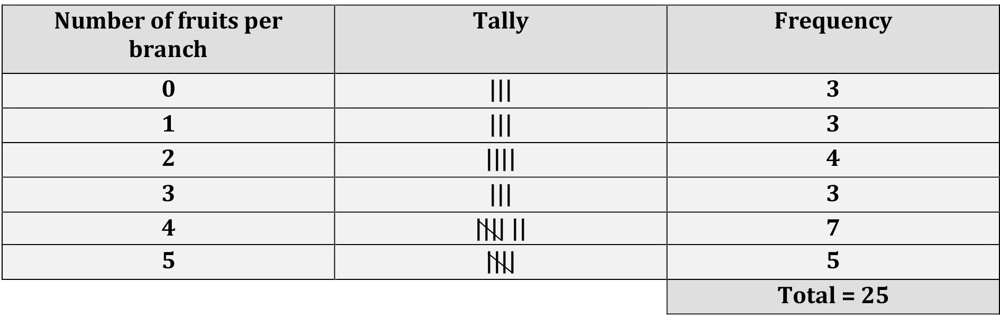
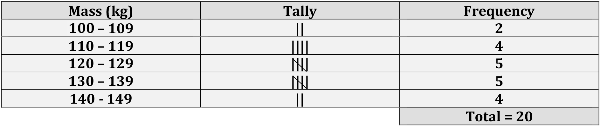
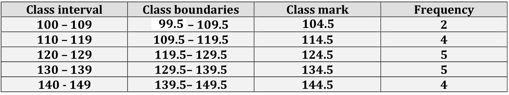

1 Basics of statistics
Statistics is the science of understanding, analyzing, and interpreting data. It plays a crucial role in making informed decisions across various fields, from agriculture to medicine, economics to environmental studies. This chapter serves as an entry point into the fascinating world of statistics, introducing you to its basic concepts and practical applications.
We begin by exploring the origins and definitions of statistics, emphasizing its relationship with mathematics and its distinct role in solving real-world problems. From there, we focus on the importance of data—the raw material of statistics—examining its types and how it is collected, organized, and analyzed.
The chapter also covers essential concepts such as population and sample, variables and constants, and the different types of variables. These concepts form the building blocks for understanding how statistical studies are designed and conducted.
Finally, we introduce frequency distributions—an indispensable tool for summarizing and interpreting data. Topics such as construction of frequency distributions, grouped and cumulative frequency distributions, and relative frequency will help you make sense of data and uncover underlying patterns.
By the end of this chapter, you will have a comprehensive understanding of the core principles of statistics, setting the stage for deeper exploration and advanced applications in later chapters. The concepts presented here are largely based on the works of (Goon and Dasgupta 1983) and (Gupta and Kapoor 1997)
1.1 The word “statistics”
The term statistics originates from the Neo-Latin word statisticum collegium, meaning “council of state,” and the Italian word statista, meaning “statesman” or “politician.” The German term Statistik emerged in the early 18th century and initially referred to the “collection and classification of data,” particularly data used by governments and administrative bodies. This usage was introduced by the German scholar Gottfried Achenwall in 1749, who is often credited as the founder of modern statistics.
In 1791, Sir John Sinclair introduced the term Statistik into English through his publication of the “Statistical Account of Scotland”(Ball 2004), a comprehensive 21-volume work. This marked the beginning of the use of the term statistics in English to describe the systematic collection and analysis of data. Later, in 1845, Francis G.P. Neison an actuary1 to the Medical Invalid and General Life Office published Contributions to Vital Statistics, the first book to include the word “statistics” in its title, focusing on actuarial and demographic data. These developments laid the foundation for statistics as a discipline, evolving from statecraft to a broader scientific approach to data analysis and interpretation.

1.2 Statistics and mathematics
Mathematics and statistics, while closely related, serve distinct purposes and operate on fundamentally different principles. Mathematics can be thought of as a well-organized library, where everything follows strict rules and logical paths. Once a theorem is proven in mathematics, it remains universally true, leaving little room for ambiguity or change. It is a deductive science, relying on precise axioms and logical reasoning to arrive at exact and unchanging results.
Statistics, however, operates in a different realm. It deals with real-world data, which is often messy, unpredictable, and influenced by numerous uncontrolled factors. Statistics is more like an open field, where methods and approaches must adapt to the variability of data. Unlike the certainty of mathematics, statistics uses inductive reasoning to analyze data, account for randomness, and make decisions or predictions under uncertainty. This flexibility is essential because real-world phenomena, especially in fields like biology, are rarely as neat and predictable as mathematical constructs.
In biological sciences, we study complex systems such as plants, animals, and ecosystems, where exact outcomes are rarely achievable. These systems are influenced by a multitude of factors, many of which cannot be precisely measured or controlled. This is where the concept of the error term becomes important. The error term represents the difference between observed and predicted values in a statistical model, accounting for the inherent variability and uncertainty in biological phenomena.
Statisticians embrace this uncertainty, developing mathematical models that approximate reality as closely as possible. Unlike mathematicians, whose focus is on achieving perfect precision, statisticians aim to draw meaningful insights from imperfect and variable data. In the study of biological systems, the goal is not to eliminate uncertainty but to understand patterns, relationships, and trends within the data.
Thus, while mathematics seeks absolute certainty, statistics accepts variability and uncertainty as fundamental characteristics of the real world. By acknowledging and incorporating these uncertainties, statisticians provide valuable tools to study and explain complex biological phenomena, making statistics an indispensable discipline for understanding the complexities of nature.
1.3 Definition of statistics
Statistics is the science which deals with the
Collection of data
Organization of data or classification of data
Presentation of data
Analysis of data
Interpretation of data
Let’s give a definition to statistics using the words themselves:
Strengthening Technological Advancement Through Implementing Systematic Techniques in Contemporary Sciences
Two main branches of statistics are:
Descriptive statistics, which deals with summarizing data from a sample using indexes such as the mean or standard deviation etc.
Inferential statistics, use a random sample of data taken from a population to describe and make inferences about the population parameters.
1.4 Data
Data can be defined as individual pieces of factual information that are recorded and used to draw meaningful insights through the science of statistics. Think of data as the building blocks that form the foundation for understanding the world around us. It’s the raw material from which we extract patterns, trends, and conclusions that help us make better decisions.
In today’s fast-paced world, data is more important than ever. From predicting weather patterns to optimizing business strategies, data is at the heart of nearly every advancement. Without data, we’re left with guesswork—making it impossible to understand complex systems or make informed decisions.
Here are some examples of data in action:
- Number of farmers in a village: Understanding this helps policymakers make decisions about agricultural development and rural economics.
- Rainfall over a period of time: This data is crucial for predicting crop yields, planning irrigation, and managing water resources.
- Area under paddy crop in a state: This informs agricultural policies, resource allocation, and even global food supply chains.
As you can see, data isn’t just a collection of numbers; it’s the key to solving real-world problems and shaping the future. In the hands of skilled statisticians, data has the power to unlock insights that can improve lives, drive innovation, and guide decisions at every level.
1.5 Scope and limits
Functions of statistics: Statistics plays a crucial role in simplifying complex data, transforming it into clear and meaningful information. It supports decision-making by presenting facts in an organized manner, aids in the formulation of effective policies, facilitates comparisons, and assists in making forecasts. By applying appropriate statistical methods, researchers can draw valid conclusions from experiments.
Applications of statistics: Statistics has become an integral part of almost every field of human activity. It is indispensable in areas such as administration, business, economics, research, banking, insurance, and more. Its ability to quantify and analyze data makes it an essential tool across industries.
Common limitations of statistics: Statistical methods are applicable only when there is variability in the data being studied. Statistics focuses on the analysis of groups or aggregates, rather than individual data points. The results derived from statistical analysis are often approximate and subject to uncertainty. Statistics is sometimes misapplied or misinterpreted, leading to erroneous conclusions.
As statisticians, we believe that the power of statistics knows no bounds. It’s a tool that, when applied correctly, can unlock insights from any dataset. While the limitations listed above are commonly found in textbooks and curricula across SAUs (State Agricultural Universities), I believe these are more about guiding students on the appropriate use of statistics rather than presenting true constraints. With the right methodology and approach, statistics can be applied in any situation to derive valuable insights and support sound decision-making.
1.6 Population and sample
Consider the following example. Suppose we wish to study the height of all students in a college. It will take us a long time to measure the height of all students of the college, so we may select 20 of the students and measure their height (in cm). Suppose we obtain the measurements like this :
149, 156, 148, 161, 159, 143, 158, 152, 164, 171, 157, 152, 163,
158, 151, 147, 157, 146, 153, 159.
In this study, we are interested in the height of all students in the college. The set of height of all students in the college is called the population of this study. The set of 20 height, H = {149, 156,148, …, 153, 159}, is a sample from this population.
Population
In statistics, a population refers to the entire collection of elements, individuals, or objects that possess a particular characteristic and are the subject of a statistical study. It encompasses all possible observations or measurements that could be included in the analysis. For example, a population could be all the students in a university, all the trees in a forest, or all the farms in a region. The population provides the complete set of data from which conclusions can be drawn.
Sample
A sample is a subset of a population selected for the purpose of conducting a statistical analysis. It represents a smaller group drawn from the population, ideally chosen to reflect its characteristics. Samples are used to estimate population parameters when it is impractical or impossible to collect data from the entire population. The key to a good sample is that it should be representative of the population to allow valid inferences to be made.
Population parameter
A population parameter is a numerical characteristic or value that describes an aspect of an entire population. It is a fixed (constant), often unknown value that represents the true measurement of a specific attribute for every member of the population. Common population parameters include the population mean, population variance, and population proportion. Since it is usually impractical or impossible to measure the entire population, parameters are often estimated using sample data.
1.7 Variables and constants
Variables
A variable is a characteristic or attribute that can take different values for different individuals, at different times, or in different locations. In other words, variables are subject to change. Examples of variables include:
- The number of fruits on a branch, the number of plots in a field, or the number of schools in a country.
- Plant height, crop yield, panicle length, or temperature.
Variables can be classified into two broad categories: quantitative variables, which are measured on a numerical scale (such as height or yield), and qualitative (or categorical) variables, which describe categories or characteristics (such as plant species or color).
Constants
A constant refers to a value that does not change under any circumstances. Unlike variables, constants retain the same value throughout the study. Examples of constants include:
- Mathematical values such as pi (\(\pi\)), which is the ratio of the circumference of a circle to its diameter (\(\pi\) = 3.14159…), and e, the base of the natural logarithms (e = 2.71828).
1.8 Types of variables
Quantitative variables
A quantitative variable is one that can be expressed in numerical terms and takes values that are measurable. Examples of quantitative variables include the number of fruits on a branch, the number of plots in a field, the number of schools in a country, plant height, crop yield, panicle length, and temperature. Quantitative variables can be further classified into two categories: discrete and continuous.
Discrete variables
Discrete variables are variables that can only take a finite or countable number of distinct values. They are often whole numbers and can be counted. For instance, the number of fruits on a branch, the number of plots in a field, or the number of schools in a country are all discrete variables.
Since discrete variables represent countable quantities, they can only take specific, separate values, such as 0, 1, 2, etc. For example, the number of daily hospital admissions is a discrete variable because it can only take whole number values like 0, 1, or 2, but not fractional values like 1.8 or 3.96.
Continuous variables
Continuous variables, on the other hand, are variables that can take any value within a given range or interval and can be measured. These variables do not have distinct gaps or interruptions in their possible values. For example, plant height, yield, temperature, and panicle length are continuous variables because they can be measured to a high degree of precision, such as 5.5 cm, 5.8 cm, or any value within a relevant range. Continuous variables can assume an infinite number of possible values within a given range, making them different from discrete variables.
Categorical variables
A categorical variable is a type of variable where the data is divided into distinct categories that do not have a numerical value. For example, marital status (single, married, widowed), employment status (employed, unemployed), or religious affiliation (Protestant, Catholic, Jewish, Muslim, others) are examples of categorical variables. These variables are often referred to as qualitative variables, as they describe qualities or characteristics rather than measurable quantities.
Unlike quantitative variables, categorical variables cannot be measured or counted in the traditional sense. Instead, they classify data into specific groups or categories.
1.9 Measurement scales
Variables can be classified into four distinct levels of measurement scales each representing a different way of organizing and interpreting data. These four levels are nominal, ordinal, interval, and ratio.
Nominal scale
The nominal scale is the most basic level of measurement and applies to categorical (qualitative) variables. Data measured on the nominal scale consist of categories that are distinct but have no inherent order or ranking. The categories are simply used for labeling or naming objects or groups. For example, gender (male, female), blood group (A, B, AB, O), and marital status (single, married, divorced) are all nominal variables. In the nominal scale, arithmetic operations, such as addition or subtraction, cannot be performed on the data.
Ordinal scale
The ordinal scale also applies to qualitative data, but with an important distinction: the data on the ordinal scale are ordered. This means that the categories have a specific rank or order, but the differences between the categories are not necessarily uniform or meaningful. For example, the grades given in a class (excellent, good, fair, poor) are ordinal, where “excellent” is ranked higher than “good,” and “good” is ranked higher than “fair,” and so on. However, the difference between “excellent” and “good” is not numerically defined, making the exact magnitude of the difference unclear. Ordinal data allows us to say that one value is greater or lesser than another, but it does not allow for the measurement of exact differences.
Interval scale
The interval scale is used for quantitative (numerical) data, and it provides more information than the nominal or ordinal scales. On the interval scale, the data points are ordered, and the differences between them are meaningful and measurable. However, the interval scale does not have a true zero point. This means that while we can measure the difference between values, we cannot make statements about ratios between them. An example of an interval scale is temperature measured in Celsius or Fahrenheit. For instance, if the temperature in two cities is 20°C and 30°C, we can say that the temperature in the second city is 10°C higher. However, we cannot say that the second city is “twice as hot” as the first city, because the zero point (0°C) does not represent the absence of temperature.
Ratio scale
The ratio scale is the highest level of measurement and applies to quantitative data. It shares the properties of the interval scale—ordered data with measurable differences between values—but it also has a meaningful zero point. This true zero point represents the total absence of the quantity being measured. With the ratio scale, not only can we measure differences between values, but we can also compute meaningful ratios. For example, weight is measured on the ratio scale. A weight of 60 kg is twice as much as a weight of 30 kg, and a weight of 0 kg indicates the complete absence of weight. Similarly, temperature measured on the Kelvin scale is an example of a ratio scale, where 0 Kelvin represents absolute zero, the complete absence of heat.
In summary, the key distinctions between these measurement scales are:
- Nominal: Categories without any order.
- Ordinal: Ordered categories without consistent differences.
- Interval: Ordered data with meaningful differences, but no true zero.
- Ratio: Ordered data with meaningful differences and a true zero point, allowing for meaningful ratios.

1.10 Collection of data
The process of collecting data is the foundational step in any statistical investigation or research study. Data can be gathered for an entire population or for a sample drawn from it. Typically, data collection is performed on a sample basis, especially when studying large populations. Collecting data is a challenging task, requiring skill and precision. The person responsible for gathering the data, known as the enumerator or investigator, must be well-trained to ensure the accuracy and reliability of the data collected. The individuals or groups providing the information are referred to as the respondents.
1.10.1 Types of data
Data collection can be categorized into two main types based on the source from which the data is derived:
- Primary Data
- Secondary Data
Primary data
Primary data refer to first-hand, original data that are collected directly by the researcher or an organization for a specific purpose. These data have not been processed or analyzed previously and are considered the most authentic form of data. Primary data are typically gathered through surveys, interviews, experiments, or observations, and they represent a direct reflection of the phenomena being studied.
Example: Population census data collected by the government are considered primary data. These are collected directly from individuals by government authorities for the purpose of census enumeration and demographic analysis.
Secondary data
Secondary data refer to data that have already been collected, processed, and published by other organizations or researchers for a different purpose. These data may have undergone some degree of analysis or treatment before being made available for new studies. Secondary data are often more convenient to use, as they are readily accessible, but they may not always perfectly suit the specific needs of the researcher.
Example: An economic survey of a country, such as reports from the Bureau of Statistics or other governmental agencies, is an example of secondary data. These data were originally collected for purposes such as policy analysis or economic planning, and now can be used for additional research.
The distinction between primary and secondary data lies primarily in their origin and the process of collection. Primary data are first-hand, original data collected directly from a single source by the researcher for a specific purpose. These data are considered pure as they have not undergone any prior statistical treatment. In contrast, secondary data are obtained from existing sources or agencies and have been previously collected and processed for different purposes. They are not considered pure as they have undergone some form of statistical treatment. While primary data are original and collected for the first time, secondary data are pre-existing and gathered from other sources. Both types of data have their respective advantages and limitations, and the choice between them depends on the research objectives, availability of resources, and the nature of the study.
1.11 Collecting primary data
Primary data can be collected using various methods, depending on the research requirements and resources available:
Personal investigation
In this method, the researcher directly conducts the survey and collects the data themselves. This approach often results in highly accurate and reliable data. It is best suited for small-scale research projects where direct involvement of the researcher is feasible.
Through investigation
In this method, trained investigators are employed to collect data. These investigators engage with individuals, asking questions and filling out questionnaires based on the responses. This method is widely used by organizations for larger data collection efforts.
Collection through questionnaire
Researchers distribute questionnaires to local representatives or agents who collect data based on their own experience and observations. While this method is relatively quick, it typically provides only a rough estimate of the information.
Through the phone
Data is gathered by contacting individuals via telephone/mobile phone. This method is fast and allows for accurate information to be collected efficiently, making it suitable for studies that require a broad reach but still need reliable data.
1.12 Collecting secondary data
Secondary data are collected through various established channels:
Official
Official sources include publications from government bodies such as the Statistical Division, Ministry of Finance, Federal Bureaus of Statistics, and various ministries (e.g., Agriculture, Food, Industry, Labor). These sources provide comprehensive and authoritative data.
Semi-Official
Semi-official sources include publications from institutions like the State Bank, Railway Board, Central Cotton Committee, and Boards of Economic Enquiry. It also encompasses reports from trade associations, chambers of commerce, technical journals, trade publications, and research organizations such as universities and other academic institutions. These sources provide valuable data, though they may not be as universally authoritative as official sources.
1.13 Frequency distribution
The data presented below shows the number of fruits per branch in a mango tree selected from a particular plot. The data, presented in this form in which it was collected, is called raw data.
0, 1, 0, 5, 2, 3, 2, 3, 1, 5,
5, 2, 3, 4, 4, 5, 4, 0, 5, 4,
2, 4, 4, 4, 1
It can be seen that, the minimum and the maximum numbers of fruits per branch are 0 and 5, respectively. Apart from these numbers, it is impossible, without further careful study, to extract any exact information from the data. But by breaking down the data into the form below

Now certain features of the data become apparent. For instance, it can easily be seen that, most of the branches selected have four fruits because number of branches having 4 fruits is 7. This information cannot easily be obtained from the raw data. The above table is called a frequency table or a frequency distribution. It is so called because it gives the frequency or number of times each observation occurs. Thus, by finding the frequency of each observation, a more intelligible picture is obtained.
1.13.1 Construction
In this section, we will discuss the process of constructing a frequency distribution. Follow the steps below. This method helps to clearly visualize the frequency of each observation, ensuring that the total frequency adds up to the total number of observations.
List all values of the variable in ascending order of magnitude.
Form a tally column, that is, for each value in the data, record a stroke in the tally column next to that value. In the tally, each fifth stroke is made across the first four. This makes it easy to count the entries and enter the frequency of each observation.
Check that the frequencies sum to the total number of observations
1.14 Grouped frequency distribution
Data below gives the plant height of 20 paddy varieties, measured to the nearest centimeters.
109, 107, 129, 122, 118, 110, 124, 146, 138, 121,
115, 132, 131, 139, 142, 134, 143, 144, 127, 116
It can be seen that the minimum and the maximum plant height are 107 cm and 144 cm, respectively. A frequency distribution giving every plant height between 107 cm and 144 cm would be very long and would not be very informative. The problem is to overcome by grouping the data into classes.
If we choose the classes
100 – 109
110 – 119
120 – 129
130 – 139
140 – 149
we obtain the frequency distribution given below:

Above table gives the frequency of each group or class; it is therefore called a grouped frequency table or a grouped frequency distribution. Using this grouped frequency distribution, it is easier to obtain information about the data than using the raw data. For instance, it can be seen that 14 of the 20 paddy varieties have plant height between 110 cm and 139 cm (both inclusive). This information cannot easily be obtained from the raw data.
It should be noted that, even though above table is concise, some information is lost. For example, the grouped frequency distribution does not give us the exact plant height of the paddy varieties. Thus the individual plant height of the paddy varieties are lost in our effort to obtain an overall picture.
1.14.1 Terminologies
Class limits
The intervals into which the observations are put are called class intervals. The end points of the class intervals are called class limits. For example, the class interval 100 – 109, has lower class limit 100 and upper class limit 109.
Continuous classes
Continuous classes are intervals where the class limits represent a continuous range of values, with no gaps between the intervals.
Example: If the class intervals are 10 − 20, 20−30, 30−40, and so on, there are no gaps between them, and all values within these ranges are included seamlessly.
Discontinuous classes
Discontinuous classes are intervals where gaps exist between the class limits. In such cases, class boundaries are used to close the gaps and ensure continuity.
Example:
If the class intervals are 10 - 19, 20 - 29, 30 - 39, and so on, there is a gap between the end of one interval and the start of the next. The actual range of each interval is defined using class boundaries, which is explained below.
Class boundaries
The raw data in the above example were recorded to the nearest centimeters. Thus, a plant height of 109.5cm would have been recorded as 110cm, a plant height of 119.4 cm would have been recorded as 119cm, while a plant height of 119.5 cm would have been recorded as 120 cm. It can therefore be seen that, the class interval 110 – 119, consists of measurements greater than or equal to 109.5 cm and less than 119.5 cm. The numbers 109.5 and 119.5 are called the lower and upper boundaries of the class interval 110 – 120. The class boundaries of the other class intervals are given below:

Note:
Notice that the lower class boundary of the ith class interval is the mean of the lower class limit of the class interval and the upper class limit of the (i-1)th class interval (i = 2, 3, 4, …). For example, in the table above the lower class boundaries of the second and the fourth class intervals are (110 + 109) /2 = 109.5 and (130 + 129)/2 = 129.5 respectively.
It can also be seen that the upper class boundary of the ith class interval is the mean of the upper class limit of the class interval and the lower class limit of the (i+1)th class interval (i = 1, 2, 3, …). Thus, in the above table the upper class boundary of the fourth class interval is (139 + 140)/2 = 139.5.
For continuous classes, class limits and boundaries are the same because there are no gaps between intervals. However, for discontinuous classes, boundaries are important as they close gaps and ensure every value belongs to one class.
Class mark
The mid-point of a class interval is called the class mark or class mid-point of the class interval. It is the average of the upper and lower class limits of the class interval. It is also the average of the upper and lower class boundaries of the class interval. For example, in the table, the class mark of the third class interval was found as follows: class mark =(120+129)/2 = (119.5 + 129.5)/2= 124.5.
Class width
For Continuous Classes:
The class width is the difference between the upper and lower class limits of a class interval. Since the class limits and boundaries are the same for continuous classes, the width can also be determined by subtracting two consecutive lower or upper class limits.
For Discontinuous Classes:
The class width is the difference between the upper and lower class boundaries of a class interval. For discontinuous classes, class boundaries are used to account for gaps, and the width can also be determined by subtracting two consecutive lower or upper class boundaries.
Note:
In the grouped frequency table above with discontinuous classes, the width of the second class interval is calculated as |110 - 119| = 9. It can be observed that the width is the same for all classes. This result can also be obtained by taking the numerical difference between the lower class boundaries of the second and third class intervals.
1.14.2 Construction
Step 1. Decide how many classes you wish to use.
Step 2. Determine the class width
Step 3. Set up the individual class limits
Step 4. Tally the items into the classes
Step 5. Count the number of items in each class
Consider the example where an agricultural student measured the lengths of leaves on an oak tree (to the nearest cm). Measurements on 38 leaves are as follows
9, 16, 13, 7, 8, 4, 18, 10, 17, 18,
9, 12, 5, 9, 9, 16, 1, 8, 17, 1, 10, 5, 9, 11, 15, 6, 14, 9, 1, 12,
5, 16, 4, 16, 8, 15, 14, 17
Step 1. Decide how many classes you wish to use.
H.A. Sturges provides a formula for determining the approximation number of classes. \[\mathbf{k = 1 + 3.322}.\mathbf{\log}\mathbf{N}\] Number of classes should be greater than calculated k
In our example N=38, so k= (1+3.322)×log(38) = (1+3.322)×1.5797 = 6.24 = approx 7
So the approximated number of classes should be not less than 6.24 i.e.\(\ k^{'}\) =7
Step 2. Determine the class width
Generally, the class width should be the same size for all classes. C= | max − min|/ k. Class width \(C^{'}\)should be greater than calculated C. For this example, C = | 18− 1|/6.24 = 2.72, so approximately class width \(C^{'} =\) 3 (Note that k used here is the calculated value using Sturges formula not the approximated).
Step 3. To set up the individual class limits, we need to find the lower limit only
\[L = min - \frac{C^{'} \times k^{'} - (max - min)}{2}\]
where C and k here are final approximated class width and number of classes respectively in our example \(L = 1 - \frac{(3 \times 7) - (18 - 1)}{2}\)=1-2=-1; since there is no negative values in data = 0. Final frequency table will be as shown in Table 1.1
| Class | Frequency |
|---|---|
| 0-3 | 3 |
| 3-6 | 5 |
| 6-9 | 5 |
| 9-12 | 9 |
| 12-15 | 5 |
| 15-18 | 9 |
| 18-21 | 2 |
Even though the student only measured in whole numbers, the data is continuous, so “4 cm” means the actual value could have been anywhere from 3.5 cm to 4.5 cm.
1.15 Cumulative frequency
In many situations, we are not interested in the number of observations in a given class interval, but in the number of observations which are less than (or greater than) a specified value. For example, in the above table, it can be seen that 3 leaves have length less than 3.5 cm and 9 leaves (i.e. 3 + 6) have length less than 6.5 cm. These frequencies are called cumulative frequencies. A table of such cumulative frequencies is called a cumulative frequency table or cumulative frequency distribution.
Cumulative frequency is defined as a running total of frequencies. Cumulative frequency can also defined as the sum of all previous frequencies up to the current point. Notice that the last cumulative frequency is equal to the sum of all the frequencies. Two types of cumulative frequencies are Less than Cumulative Frequency (LCF) and Greater than Cumulative Frequency(GCF). LCF is the number of values less than a specified value. GCF is the number of observations greater than a specified value.
The specified value for LCF in the case of grouped frequency distribution will be upper limits and for GCF will be the lower limits of the classes. LCF’s are obtained by adding frequencies in the successive classes and GCF are obtained by subtracting the successive class frequencies from the total frequency. see calculated LCF and GCF in Table 1.2 below.
1.16 Relative frequency
It is sometimes useful to know the proportion, rather than the number, of values falling within a particular class interval. We obtain this information by dividing the frequency of the particular class interval by the total number of observations. Relative frequency of a class is the frequency of class divided by total observations. Relative frequencies all add up to 1. See relative frequency calculated in Table 1.2 .
| Class | Frequency | A | B | C |
|---|---|---|---|---|
| 0.5 - 3.5 | 3 | 3 | 38 | 0.079 |
| 3.5 - 6.5 | 6 | 9 | 35 | 0.158 |
| 6.5 - 9.5 | 10 | 19 | 29 | 0.263 |
| 9.5 - 12.5 | 5 | 24 | 19 | 0.132 |
| 12.5 - 15.5 | 5 | 29 | 14 | 0.132 |
| 15.5 - 18.5 | 9 | 38 | 9 | 0.237 |
“Data is the sword of the 21st century, those who wield it well, the Samurai.”
- Jonathan Rosenberg, former Google SVP
actuary: A person who compiles and analyses statistics and uses them to calculate insurance risks and premiums.↩︎